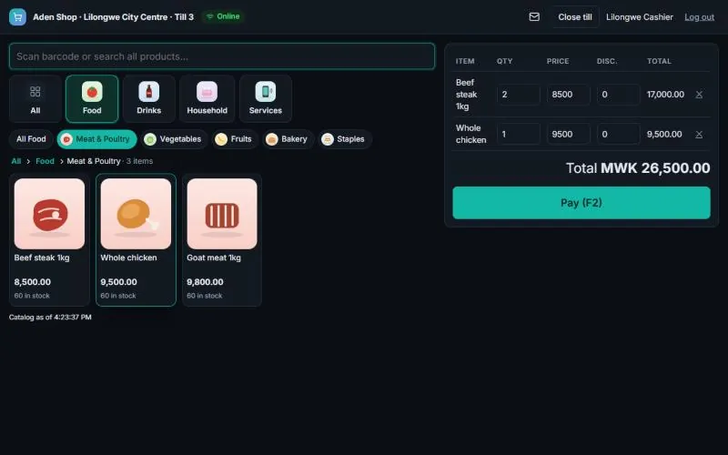
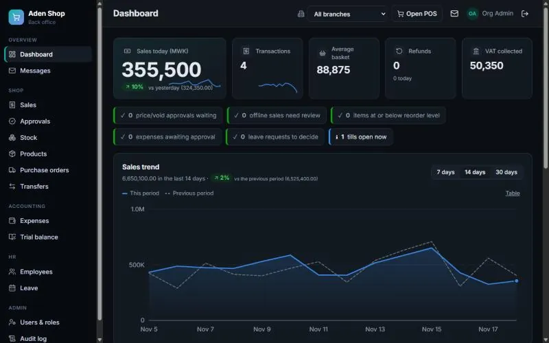
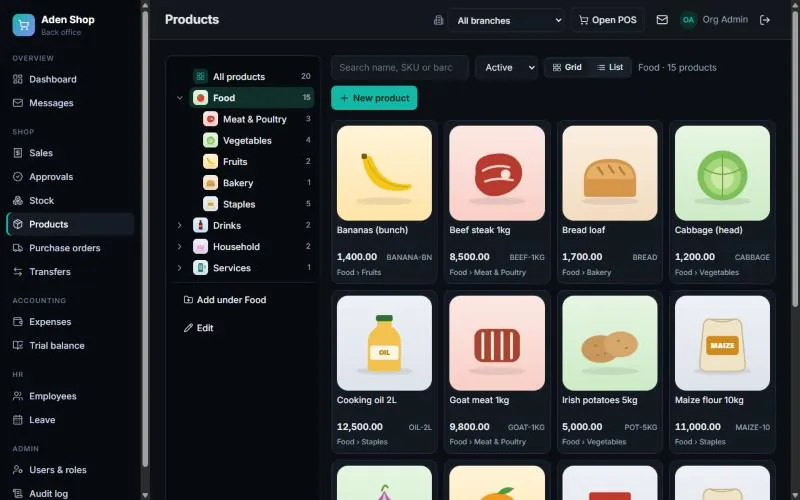
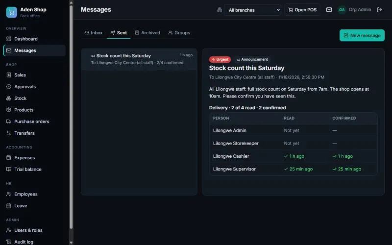

Software · Retail
POS System
Shop management and point of sale for a business with several branches: a till per counter that keeps selling when the internet drops, and a back office for managers, accountants and HR.

The idea
A till that never stops selling
Shops in Malawi can't rely on a steady connection, so the till caches the branch's catalog, prices, stock and payment methods on the device. If the server can't be reached, cash and card sales are queued with their own receipt numbers and synced safely once the connection is back.
Behind the till sits the same discipline as banking software: every sale, refund, void, stock movement and expense posts a balanced journal entry, price changes and refunds need a supervisor, and nobody can approve their own request.
What it does
From the counter to the books
Till & offline sales
Barcode and search, picture tiles by department, till sessions with a float and cash count, and an offline queue that syncs without duplicates.
Supervisor overrides
Price changes, big discounts, voids and refunds need a supervisor's PIN at the till or a one-time remote approval, never below the floor price.
Stock across branches
An append-only stock ledger, purchase orders and deliveries, reorder alerts and branch-to-branch transfers confirmed on arrival.
Accounting
Double-entry postings for every sale and movement, expenses approved by a second person, till over/short, and a trial balance.
HR
Employees, departments, attendance, leave and shift rota. Ending someone's employment disables their login at once.
Branding & documents
Shop logo and colours with automatic contrast checks, light and dark themes, and receipt, invoice and proforma layouts with live previews.
Screens
The till and the back office







Screens show sample data. The product pictures are built-in illustrations; real shops upload photos.
Try it yourself
A live demo shop
The demo runs a sample shop, "Aden Trifo Shop", with branches in Lilongwe and Blantyre, tills, products and stock. Changes that would break the demo for others, such as editing the shared accounts or role permissions, are switched off, and the demo resets whenever it restarts. It's on a free server that sleeps when unused, so the first visit can take about a minute to load.
The sign-ins, their password and the supervisor PIN are shown on the demo's sign-in page: open Demo accounts and click one to fill it in.
| Role | Sign in as | Try this |
|---|---|---|
| Cashier | ll_cash1 | Open a till, scan or tap products, take payment and print a receipt |
| Supervisor | ll_super | Approve a price change, big discount, void or refund with a PIN or remotely |
| Storekeeper | ll_store | Check stock, receive a purchase order, send a transfer to Blantyre |
| Accountant | accounts | Record an expense and check the trial balance |
| HR | hr | Add staff, departments, leave and shifts |
| Owner | owner | The dashboard across all branches, users and messages |
Free to use
Take it, make it yours
The POS System is free. The full code is on GitHub, and anyone may use it and customise it however they wish, as long as they credit the original creator, Oblation Brian Simbeye.
Contributions are welcome: open a pull request, following the contribution guide. I keep improving it with updates here and there, all for free.
Need help setting it up for your shop? I'm always available for installation and set-up support at an agreed fee. Get in touch on WhatsApp or by email.
Note on names: the names of people used across my projects, in mockups, demos and sample data (customers, students, staff and users), are made up or randomly generated. Any resemblance to real people is coincidental.